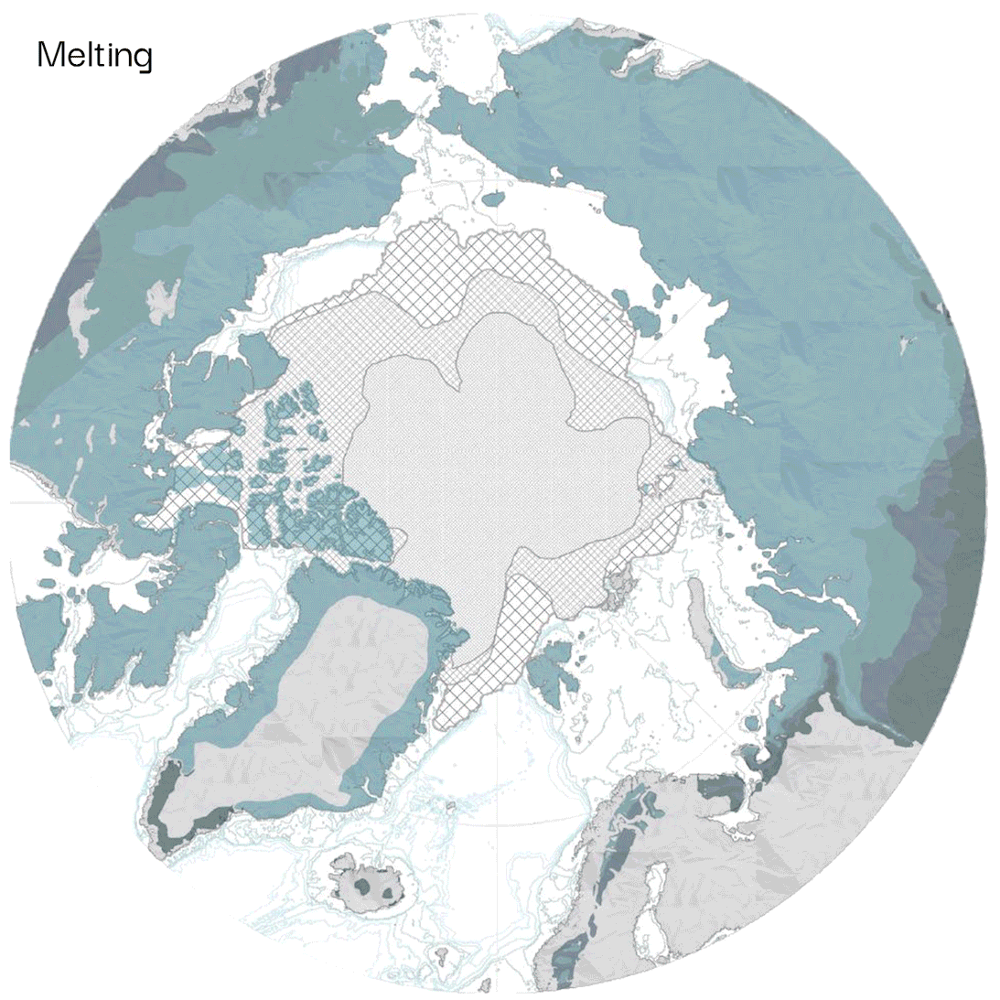
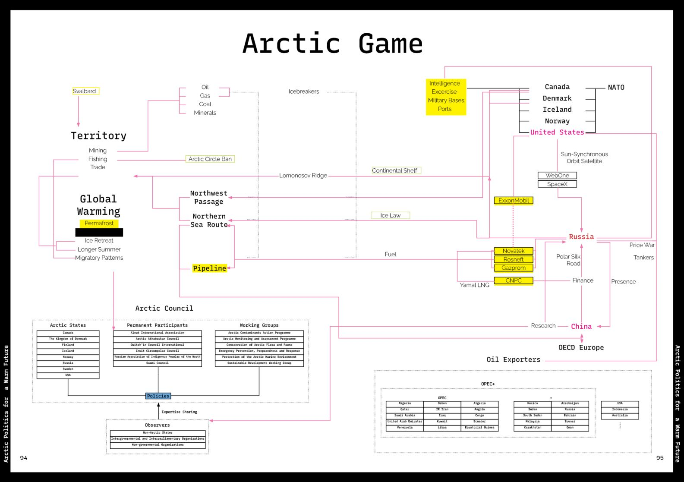
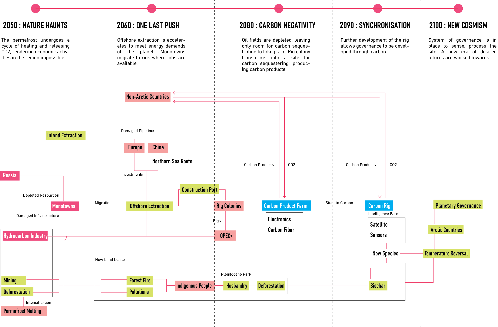
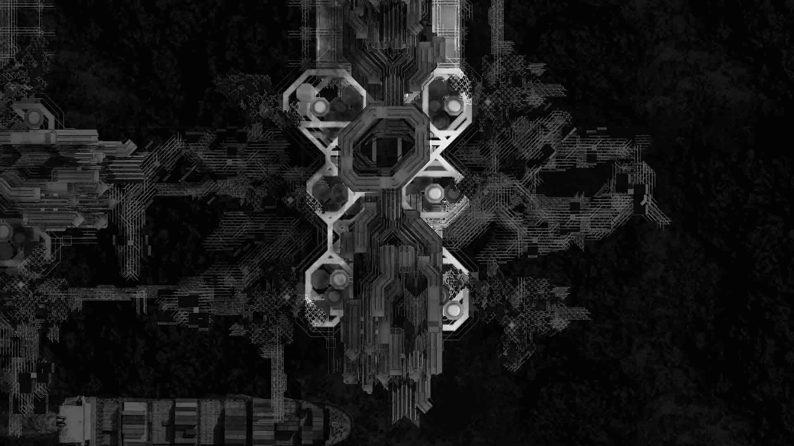
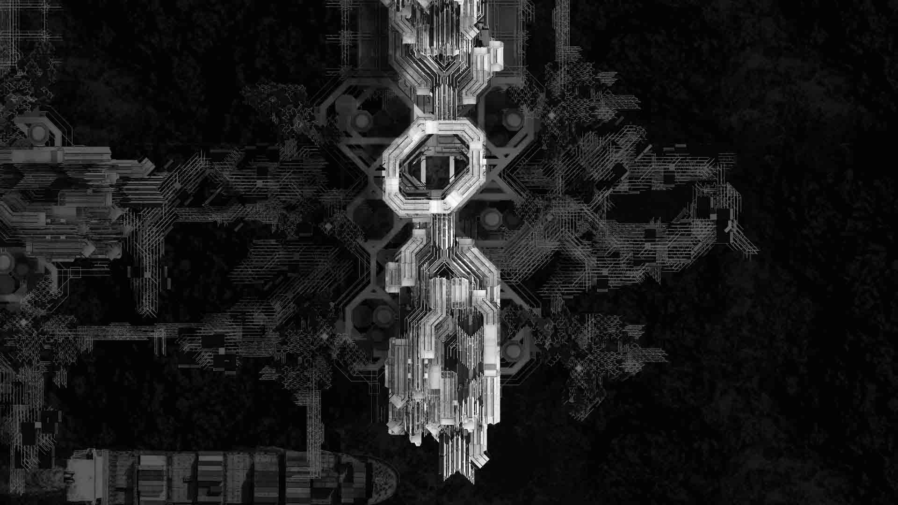
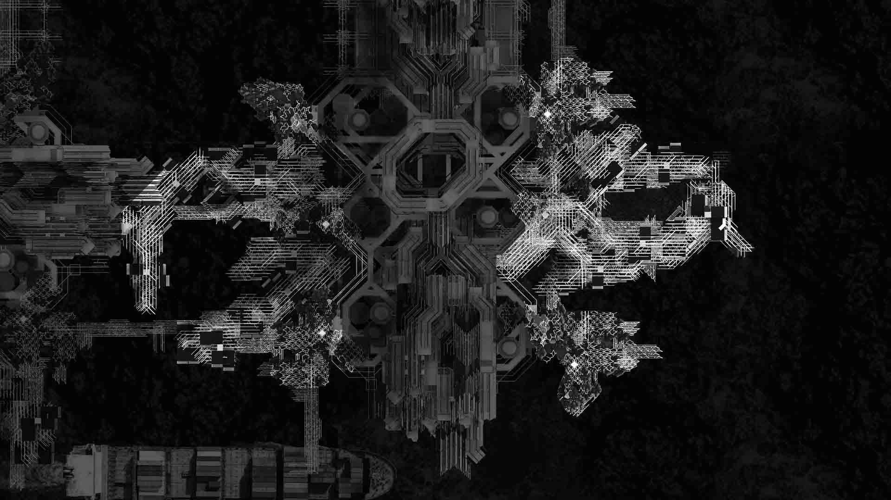
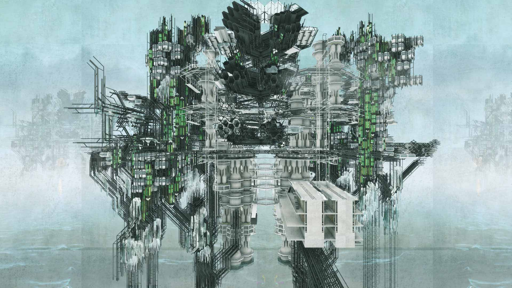

To Mother Nature: Planetary Governance through the Permafrost
The project seeks to redefine what it means to be sustainable through the management of the permafrost. Ideas of hyperintelligence and planetary governance are introduced as new forms of understanding the nature that we inhabit.
Most would agree about the need to have sustainability, but what it means to each person differs. The phenomena of sustainability shows that it is insufficient to merely rely on human perception and understanding to solve issues that are beyond our lived reality. There is a need to first describe the problem that faces us as close to its totality as possible, before organising our efforts to confront it.
What is Our Future?
"These disavowed beliefs and suppositions are the ones which prevent us from really believing in the possibility of the catastrophe... The situation is like that of the blind spot in our visual field. We do not see the gap, the picture appears continuous." - Slavoj Zizek
The many sustainabilities that we enact today are not consistent with one another, and sometimes become its own opposite. Yet we act as if that is not the case for it is too violent to confront the reality of its ideological positioning in the world. Our inability to reconcile the anxiety of disappearing and desire/pleasures leads us towards a path that both yearns and denies any futures for the planet. A consistent future has to be defined and worked towards in order to create meaning in the actions that we call sustainable.
Through the inquiry of complex earth systems and epistemology, hyperintelligence is introduced as a new form of understanding and a governance system to produce this consensual future that has yet to be described.
Permafrost
The permafrost region covers 25% (or 23 million square kilometers) of the landmass in the Northern Hemisphere, yet resides a population of 5 million. It is a layer of ground that remains below 0 degrees for two or more consecutive years. It can contain sediments, rocks, soil and ice. It usually exists below the surface, ranging from 1 to over 1000m.
Often when we think of nature, we think of one that returns back to equilibrium when there are externalities acting on it to bring it away from its 'natural' state. We usually do not think it can become its own adversary. This can happen in the permafrost. When we push the system beyond its limits, it acts as a carbon source rather than a sink. Only this time it can happen autonomously without human input on a planetary scale.

The Arctic Condition
Melting of the permafrost accelerates warming of the Arctic. This increases access to trade routes and material resources, thus there is renewed interest in countries to assert their presence in this region.


Do we know what we think we know?
To confront this as purely an issue of excess CO2 is insufficient. The Earth is a complex interaction of systems that produces change for better and for worse. Warming presents new opportunities in the Arctic. Our lack of ability to predict the consequences of our actions means that there will be unintended results. The sustainability of Carbon will result in shortsighted planning towards other sustainabilities. We must be able to reliably understand the repercussion of things that we do, and therefore agree on a future beneficial to all.


Governance Production

Governance Creation

Governance Maintenance

